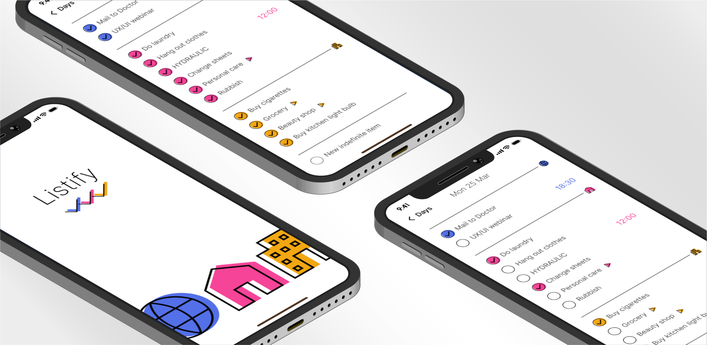

Project type
Personal
Individual
Tools
Figma
Duration
3 days

Project type
Personal
Individual
Tools
Figma
Duration
3 days
Prompt
Creating lists is a daily activity, often rushed, leading to
confusion and increasing the likelihood of
forgetting something.
There's a need for a structured way to organize these entries.
Suggestion
First, enabling the addition of details to a list, even
after it's been written, wouldn't interrupt the flow of creation.
By analyzing around fifty lists from three different
individuals, three main categories emerged: at home,
outside, and online.
Maybe it would be okay to
categorize online tasks under "home", but frequently it's possible
to manage these tasks on mobile device while on the go or during
downtime. This distinction helps maintain the autonomy of online
family tasks.
Product structure
The user flow involves the creation of raw content initially, with the ability to categorize it or add details later, such as inserting a list into it or setting a scheduled time.
Current as-is
Categories are invented and confusing. There are scattered schedules and lists.
Design solution
When holding down on an element, a window appears where you can
drag it or press "edit".
For example, to remind myself to take out the trash before
leaving, it's convenient to move the 'Rubbish' entry to the
bottom, just before the "Outside" category.
Pressing on "edit" will open a modal in which it's possible to manage the entry.
The schedules are clearly visible, and entries containing lists can be expanded.
Bright and distinct colors make it easy and immediate to scan by category.
Visual design